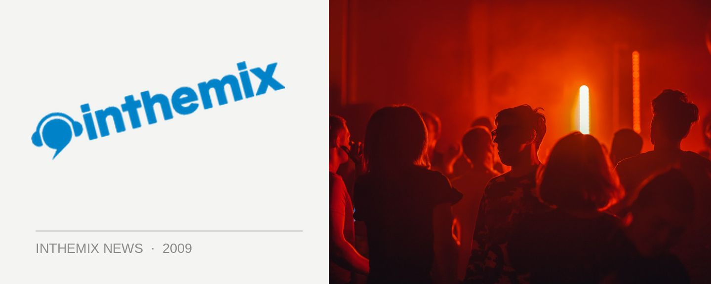

Subsonic Music Festival reveals local supports
The debut of the Subsonic Music Festival is now less than a month away, set to take over Barrington Tops’ Mountain Valley Resort with a cracking lineup of international electronic artists that includes Salmonella Dub, Alex Smoke and Format:B*. Those names are just the tip of the iceberg however, as the organisers have just taken the wraps off the massive list of local acts who will also be playing over the weekend.
Infusion frontman Jamie Stevens and Mad Racket veteran Simon Caldwell will lead the charge, with the organisers also pointing to production duo Shades of Gray, Matt Aubusson and Diatribe as some of the other excellent names on the bill.
Subsonic Music Festival takes over the Mountain Valley Resort in Barrington Tops on the first weekend of December. There are a limited number of second release tickets still onsale on ITM, check out the local lineup below:
Simon Caldwell
Jamie Stevens
Marcotix
Continuum
Uone
RifRaf
Logan Baker
Diatribe
Matt Aubusson
Shades Of Gray
Darkchild vs Galaktik
Dylan Griffin
Craig Pringle
Robbie Lowe
Lub Dub
Bumble
Trinity Vs Dave Stuart
Muska
Rob Zobec
Adam T
Ritchie Jay
Jaimz
Shamus
Bump DJs
Launchpad
Superbeast
Gill Paradox
Suspekt
Eegor
Ian Woodsmen
T:mo vs Borg
Acid Lips Vs Facial Tweak
Manarchy
Serotone
Alex (Up)
Ozzy
Gav Martin
Tetrameth
Scruffy Goat
The Cook
Luna
Ketastep
Jeannie
Dica
Fabeta
Carlinhos
Gui Durante
Hedonix
Hung Ly
Rock Stedy